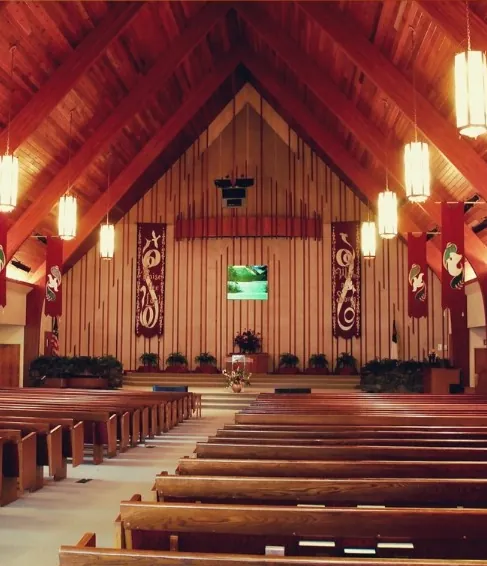
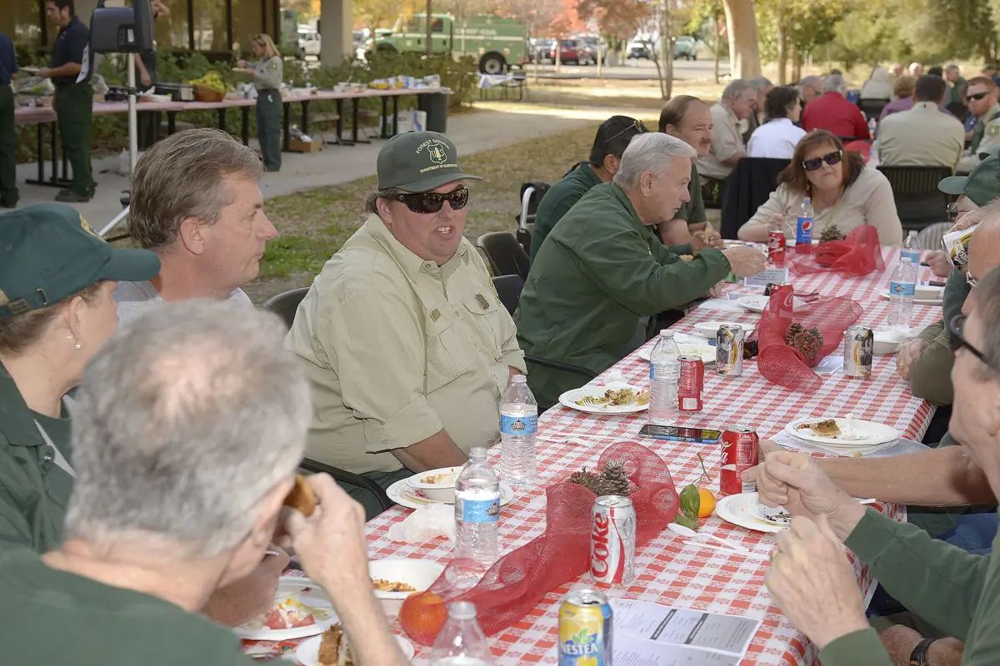
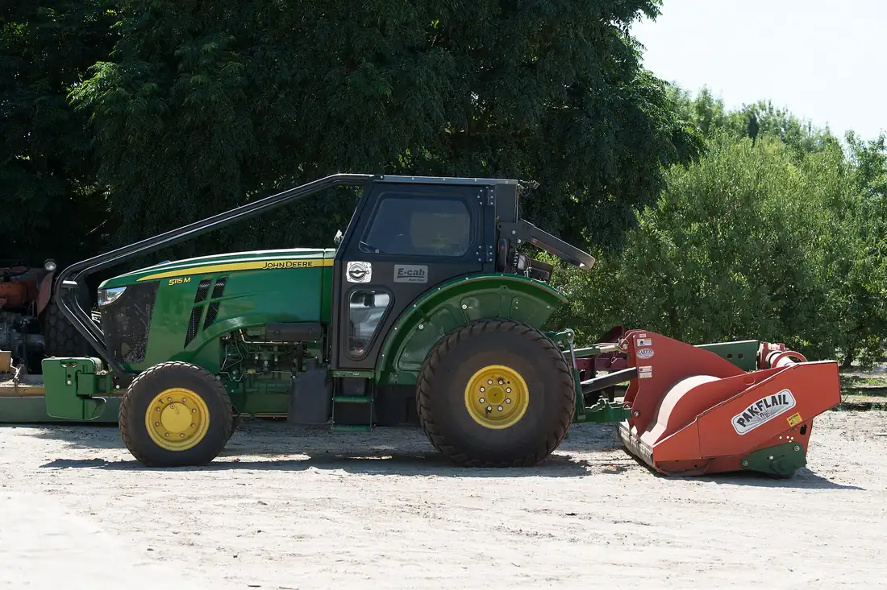

Six days you labor. On the seventh, rest.
“Six days thou shalt work, but on the seventh day thou shalt rest: in earing time and in harvest thou shalt rest.” Exodus 34:21
Whether you work the orchards, milk before sunup, drive truck, turn wrenches or keep a household running, the Sabbath is God's gift to people who work hard. We're a friendly church family on Central Avenue, gathering every Saturday to worship Jesus, study the Bible together, and serve our Ceres neighbors. Come as you are, boots and all. Everyone's welcome.

Join us this Saturday
Many Christians worship on Sunday; Adventists keep the seventh-day Sabbath, Saturday. Why Saturday?
Everything for this Sabbath in one place
Upcoming
- Oct19
- Oct20
- Oct20
- Oct21
- Oct21
- Oct24
Here's what to expect
Sabbath School at 9:30 is a relaxed time of Bible study in small classes, with classes for kids too. Worship at 11:00 includes singing, prayer, Scripture and a Bible-based message. Dress is whatever you're comfortable in confirm wording, and on the second Sabbath of each month everyone's invited to stay for a fellowship potluck.

Illustrative photo, not our church: “Potluck with Friends”, San Bernardino National Forest, public domain (Wikimedia Commons). replace with a real potluck photo
Community Food Bank & Clothing
Our Community Services team shares food, clothing and household items with neighbors in need. The Community Food Bank opens the first Thursday of each month at 8:30 a.m., and Second Harvest's Mobile Fresh produce distribution comes on the third Tuesday at 10 a.m. confirm both schedules
Built on wheat, water and hard work
Ceres took its name in 1871 from a grain warehouse beside the new railroad, back when wheat covered this valley. In 1887 local farmers formed the Turlock Irrigation District, the first irrigation district in California, and canal water turned the fields into the orchards and dairies we know today.
We're a church for the people who keep this valley working, and for everyone else too. The work is real, and so is the rest God gives.
“The harvest truly is plenteous, but the labourers are few.” Matthew 9:37

Illustrative photo, not our church: tractor at Mota Ranch almond orchard, Livingston, CA. USDA NRCS photo, public domain (Wikimedia Commons).
Photo: “Open Bible with pen” by Ryk Neethling, CC BY 2.0, via Wikimedia Commons.
Hope in Jesus, rooted in Scripture
We believe in one God (Father, Son and Holy Spirit), in salvation as a free gift through Jesus, in the Bible as God's voice to us today, and in Jesus' promise to come again. We celebrate the Sabbath as a weekly gift of rest, and believe God cares about every part of life: body, mind and spirit.
Our beliefs in plain wordsFind us
1633 Central Ave, Ceres, CA 95307
209-538-1024 · ceresadventist@sbcglobal.net
We're currently seeking a new pastor. In the meantime, our elders and church family warmly welcome you. Meet our leadership team.
Plan Your Visit